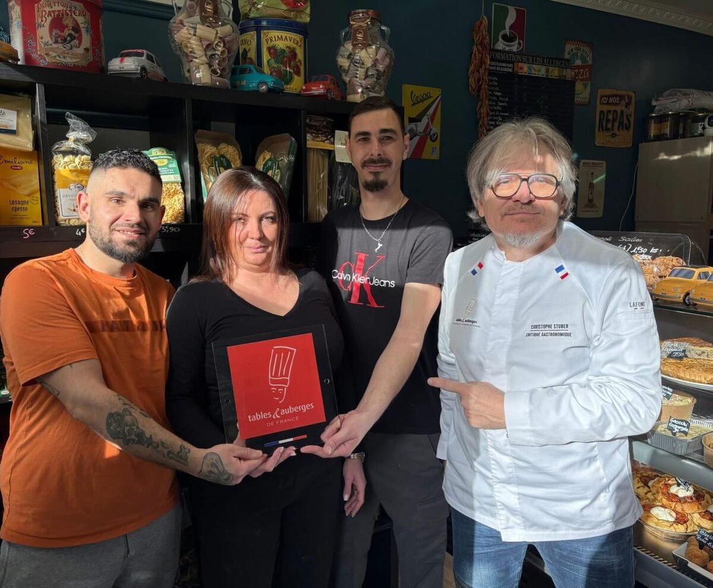

De la Sicile au Vaucluse — une histoire de passion

Derrière CasaMia, il y a Tony et Cindy. Tony, d'origine sicilienne, a grandi entre les arômes de basilic frais, les tomates qui sèchent au soleil, et la pâte à pizza que sa grand-mère préparait chaque dimanche. Cindy, toujours souriante et solaire, accueille chaque client comme un membre de la famille.
Ensemble, ils ont bâti bien plus qu'une pizzeria : un lieu de vie, une épicerie fine, un service traiteur — trois métiers réunis sous un même toit, guidés par une seule obsession : l'authenticité.
Labellisés « Tables & Auberges de France » par le critique gastronomique Christophe Stuber
CasaMia, ca veut dire « chez moi » en italien. Et c'est exactement ce que nous voulons que vous ressentiez en poussant notre porte : cette chaleur, cette simplicite, ce sentiment d'etre accueilli comme a la maison.
Quand nous avons ouvert a Entraigues-sur-la-Sorgue, notre ambition etait claire : proposer une cuisine sicilienne authentique, sans compromis sur la qualite. Pas de produits industriels, pas de raccourcis. Juste des recettes transmises de generation en generation et des ingredients importes directement de Sicile.

Chaque recette est fidele a la tradition sicilienne. Pas de fusion, pas de reinterpretation a la mode. La Sicile, la vraie, dans votre assiette.
Nous importons nos produits directement de Sicile : farine, tomates, huile d'olive, charcuterie, fromages. Ce qui fait la difference, c'est la matiere premiere.
CasaMia est une affaire de famille. Chaque client est accueilli comme un ami. Cette chaleur humaine, c'est ce qui nous differencie et c'est ce qui vous fait revenir.


Poussez la porte de CasaMia et laissez-vous transporter en Sicile. Notre chef et toute l'equipe vous attendent.